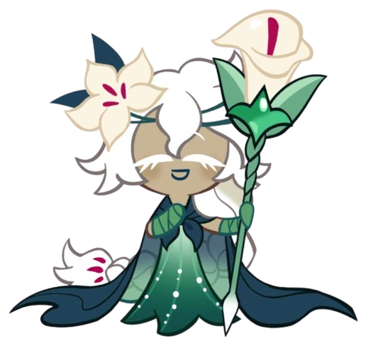
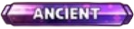
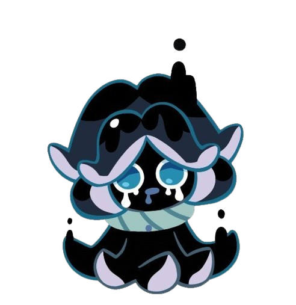
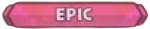
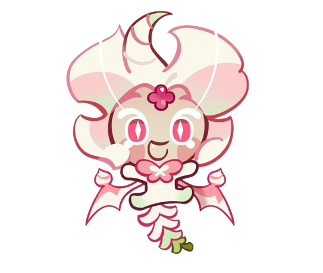
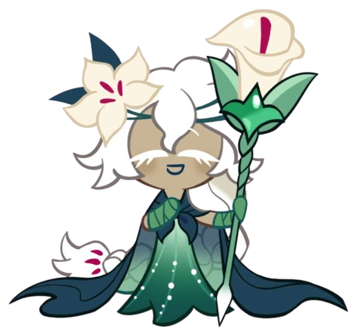
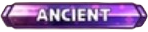
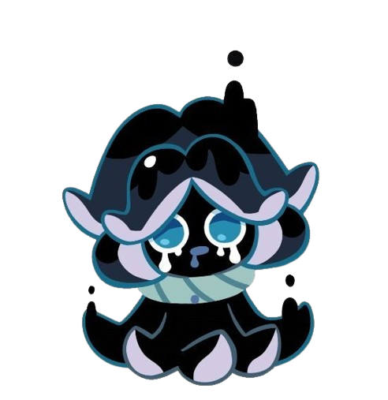
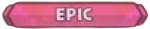
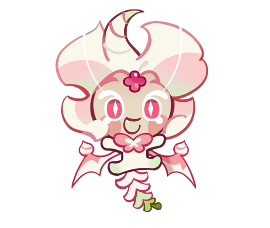

COOKIE RUN KINGDOM CHARACTERS
| Cookie | Information |
|---|---|
|  |  White Lily Cookie Bomber Middle |
|  |  Squid Ink Cookie Magic Middle |
|  |  Snapdragon Cookie Support Rear |
| Cookie | Information |
|---|---|
|  |  White Lily Cookie Bomber Middle |
|  |  Squid Ink Cookie Magic Middle |
|  | Snapdragon Cookie Support Rear |